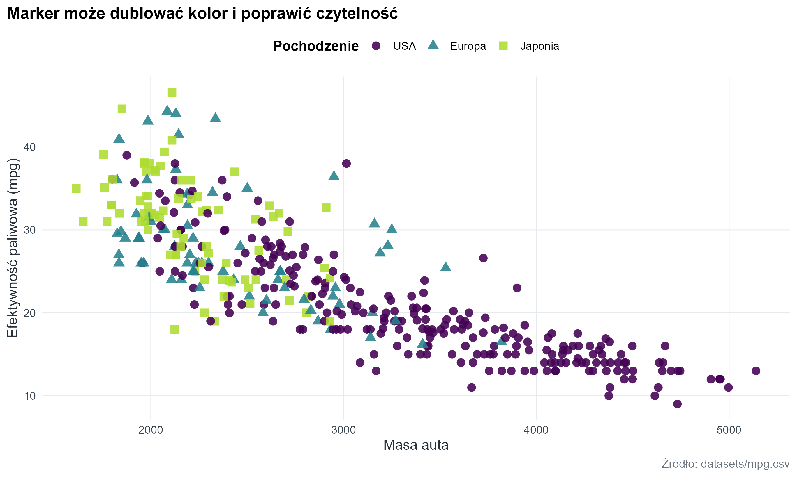
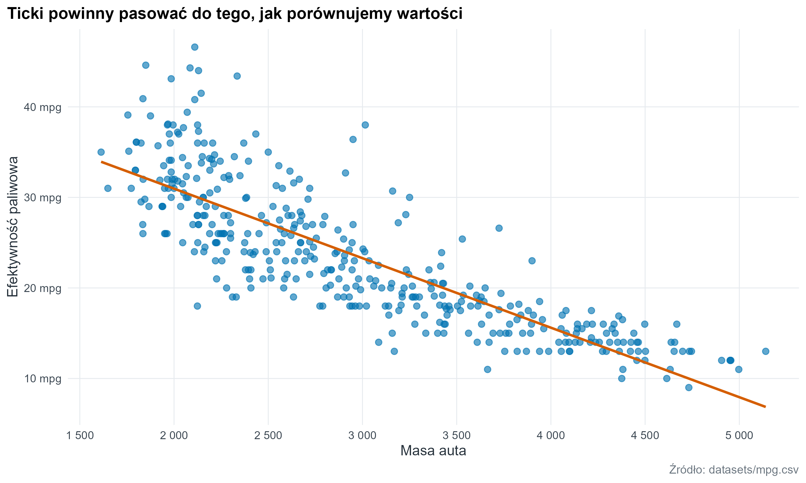
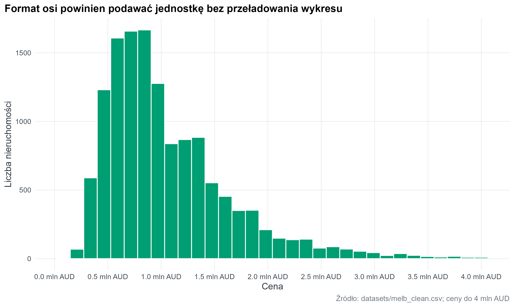
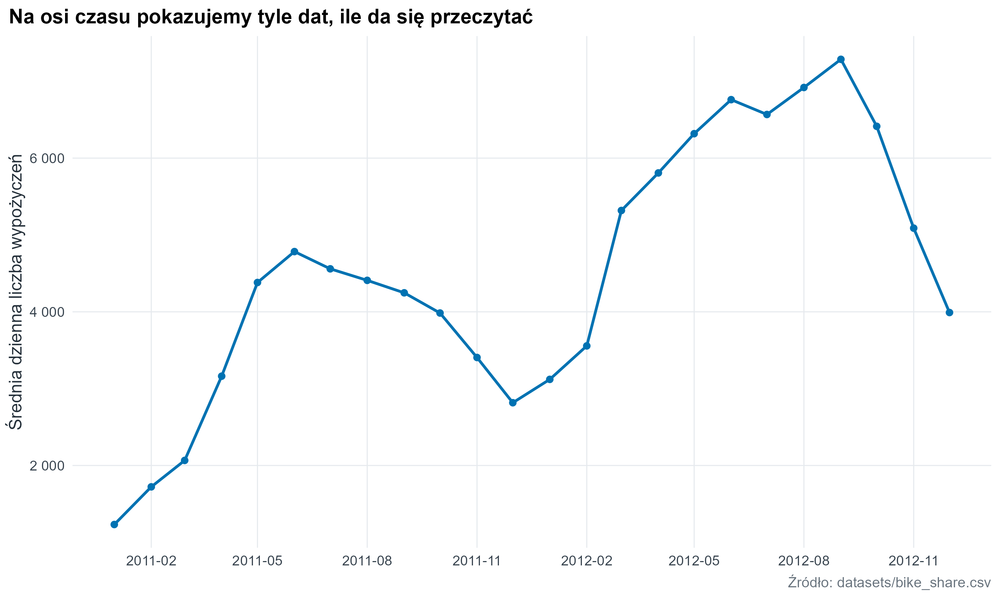
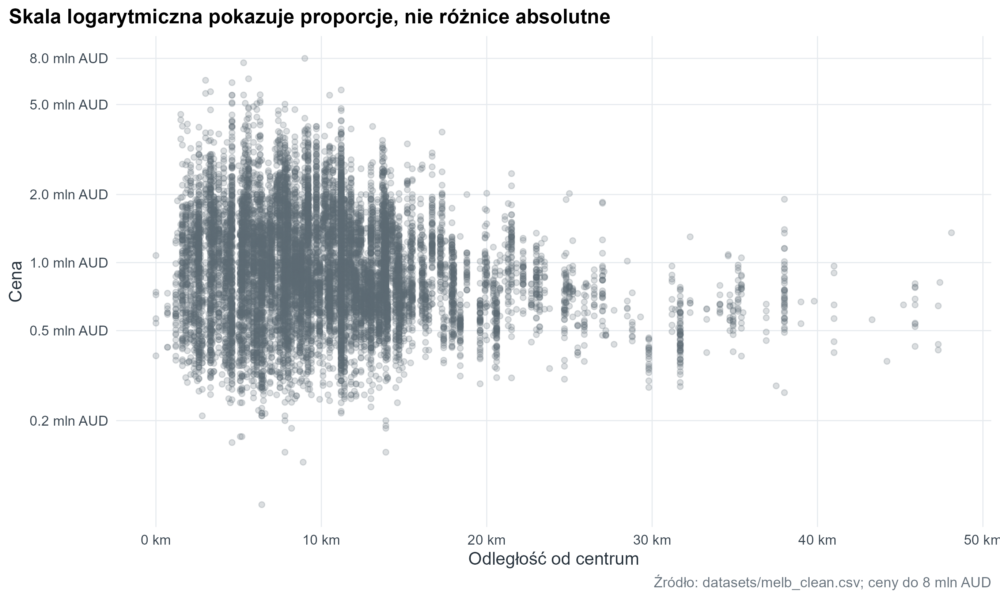
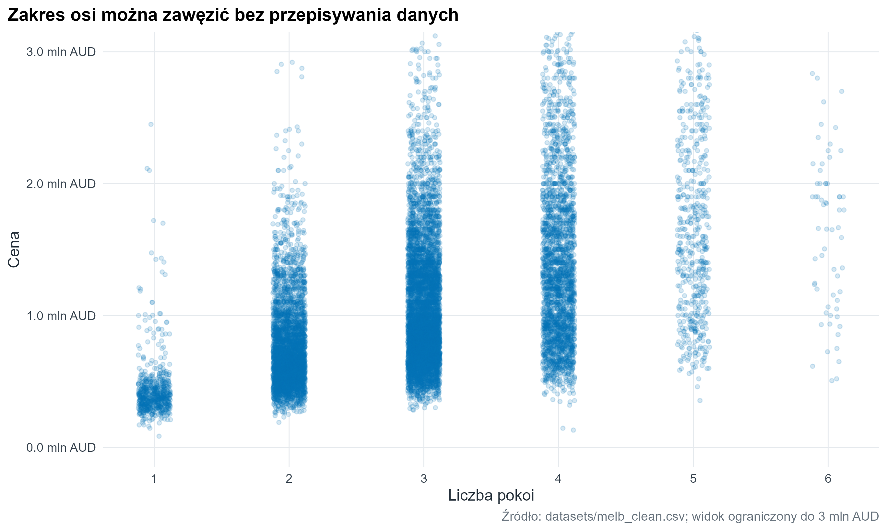

library(tidyverse)
library(here)
library(janitor)
library(lubridate)
source(here("R", "theme_course.R"))
theme_set(theme_course())12 Markery, ticki i osie
Oś jest częścią argumentu, nie tylko ramką wokół wykresu. Znaczniki osi (ticks), format wartości, zakres i transformacja skali decydują o tym, czy odbiorca czyta dane bez zgadywania jednostek.
mpg_local <- readr::read_csv(here("datasets", "mpg.csv"), show_col_types = FALSE) |>
mutate(
cylinders = factor(cylinders),
origin = factor(
recode(origin, usa = "USA", europe = "Europa", japan = "Japonia"),
levels = c("USA", "Europa", "Japonia")
)
)
melb <- readr::read_csv(here("datasets", "melb_clean.csv"), show_col_types = FALSE) |>
janitor::clean_names() |>
select(-any_of("x1")) |>
mutate(
price_m = price / 1000000,
type = recode(type, h = "dom", u = "mieszkanie", t = "szeregowiec")
)
bike_month <- readr::read_csv(here("datasets", "bike_share.csv"), show_col_types = FALSE) |>
mutate(date = lubridate::ymd(dteday), month = floor_date(date, "month")) |>
group_by(month) |>
summarise(avg_rentals = mean(total_rentals), .groups = "drop")12.1 Markery punktów (markers)
Kolor nie musi robić całej pracy. Kształt punktu (shape) pomaga wtedy, gdy wykres będzie drukowany, oglądany w skali szarości albo gdy kolor koduje już inną zmienną.
mpg_local |>
ggplot(aes(x = weight, y = mpg, shape = origin, colour = origin)) +
geom_point(size = 2.8, stroke = 1, alpha = 0.88) +
scale_shape_manual(values = c(USA = 16, Europa = 17, Japonia = 15), name = "Pochodzenie") +
scale_colour_course_d(name = "Pochodzenie") +
labs(
title = "Marker może dublować kolor i poprawić czytelność",
x = "Masa auta",
y = "Efektywność paliwowa (mpg)",
caption = "Źródło: datasets/mpg.csv"
)
12.2 Znaczniki osi (ticks) i siatka
Domyślne znaczniki osi często są poprawne, ale nie zawsze najlepsze. Warto ustawić je ręcznie, gdy pomaga to porównać wartości albo gdy jednostka ma naturalny krok.
mpg_local |>
ggplot(aes(x = weight, y = mpg)) +
geom_point(alpha = 0.62, colour = "#0072B2", size = 2.2) +
geom_smooth(method = "lm", se = FALSE, colour = "#D55E00", linewidth = 1) +
scale_x_continuous(
breaks = seq(1500, 5500, by = 500),
labels = scales::label_number(big.mark = " ")
) +
scale_y_continuous(
breaks = seq(10, 50, by = 10),
labels = scales::label_number(suffix = " mpg")
) +
labs(
title = "Ticki powinny pasować do tego, jak porównujemy wartości",
x = "Masa auta",
y = "Efektywność paliwowa",
caption = "Źródło: datasets/mpg.csv"
)
12.3 Format wartości na osi
Etykiety osi można zmienić bez zmieniania danych. Dane mogą pozostać w milionach, a oś może jasno dopowiedzieć jednostkę.
melb |>
filter(!is.na(price_m), price_m <= 4) |>
ggplot(aes(x = price_m)) +
geom_histogram(bins = 32, fill = "#009E73", colour = "white") +
scale_x_continuous(
breaks = seq(0, 4, by = 0.5),
labels = scales::label_number(suffix = " mln AUD", accuracy = 0.1)
) +
labs(
title = "Format osi powinien podawać jednostkę bez przeładowania wykresu",
x = "Cena",
y = "Liczba nieruchomości",
caption = "Źródło: datasets/melb_clean.csv; ceny do 4 mln AUD"
)
12.4 Oś daty
Przy szeregach czasowych dobry krok znaczników jest ważniejszy niż pokazanie każdej możliwej daty. Zbyt gęsta oś czasu zamienia się w tekstową plamę.
bike_month |>
ggplot(aes(x = month, y = avg_rentals)) +
geom_line(colour = "#0072B2", linewidth = 0.9) +
geom_point(colour = "#0072B2", size = 1.7) +
scale_x_date(
date_breaks = "3 months",
labels = function(x) format(x, "%Y-%m")
) +
scale_y_continuous(labels = scales::label_number(big.mark = " ")) +
labs(
title = "Na osi czasu pokazujemy tyle dat, ile da się przeczytać",
x = NULL,
y = "Średnia dzienna liczba wypożyczeń",
caption = "Źródło: datasets/bike_share.csv"
)
12.5 Transformacja skali
Transformacja osi zmienia sposób pokazania odległości między wartościami. Skala logarytmiczna (log scale) pomaga, gdy większość obserwacji jest skupiona nisko, a kilka wartości jest dużo wyższych.
melb |>
filter(!is.na(distance), !is.na(price_m), price_m > 0, price_m <= 8) |>
ggplot(aes(x = distance, y = price_m)) +
geom_point(alpha = 0.22, colour = "#5B6770", size = 1.5) +
scale_x_continuous(
breaks = seq(0, 50, by = 10),
labels = scales::label_number(suffix = " km")
) +
scale_y_log10(
breaks = c(0.2, 0.5, 1, 2, 5, 8),
labels = scales::label_number(suffix = " mln AUD", accuracy = 0.1)
) +
labs(
title = "Skala logarytmiczna pokazuje proporcje, nie różnice absolutne",
x = "Odległość od centrum",
y = "Cena",
caption = "Źródło: datasets/melb_clean.csv; ceny do 8 mln AUD"
)
12.6 Powiększenie bez usuwania danych
coord_cartesian() zmienia widoczny zakres wykresu, ale nie usuwa obserwacji przed obliczeniem geometrii i statystyk. To inna operacja niż filter(), które zmienia dane wejściowe.
melb |>
filter(!is.na(rooms), !is.na(price_m), rooms <= 6) |>
ggplot(aes(x = rooms, y = price_m)) +
geom_jitter(width = 0.12, height = 0, alpha = 0.16, colour = "#0072B2", size = 1.2) +
coord_cartesian(ylim = c(0, 3)) +
scale_x_continuous(breaks = 1:6) +
scale_y_continuous(labels = scales::label_number(suffix = " mln AUD", accuracy = 0.1)) +
labs(
title = "Zakres osi można zawęzić bez przepisywania danych",
x = "Liczba pokoi",
y = "Cena",
caption = "Źródło: datasets/melb_clean.csv; widok ograniczony do 3 mln AUD"
)
12.7 Zadanie
Wybierz wykres punktowy z wcześniejszego rozdziału. Przygotuj wersję z innymi markerami dla grup, własnymi znacznikami osi i etykietami wartości dopasowanymi do jednostki danych.